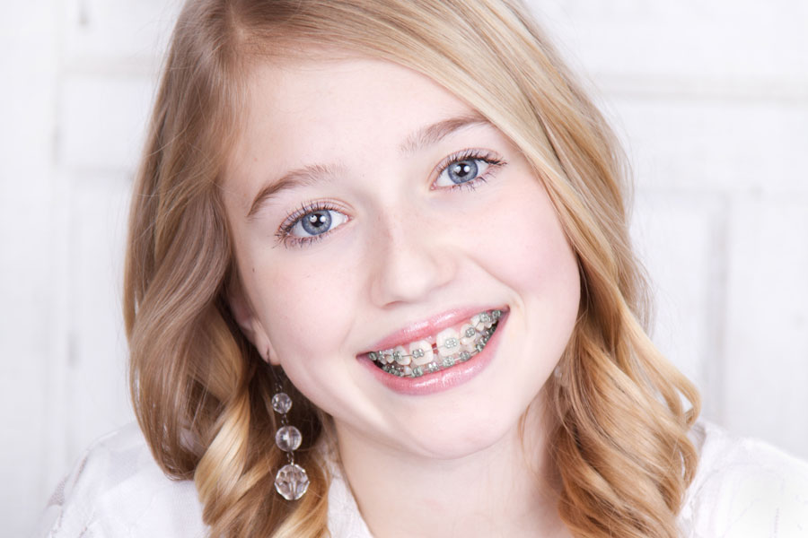
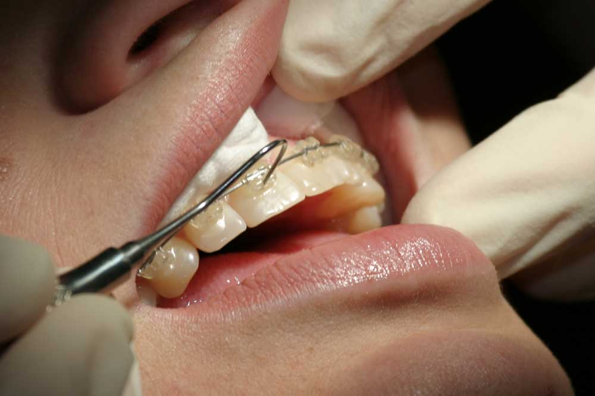

ЧТО ТАКОЕ ОРТОДОНТИЯ?
 Ортодонтия - это раздел стоматологии, занимающийся лечением дефектов развития зубов и челюстно-лицевого скелета. Из-за неровности зубов и нарушений зубного ряда, зубы с трудом поддаются гигиеническим процедурам, более подвержены риску раннего развития кариеса и пародонтита, а также могут вызывать дополнительные нагрузки челюстно-лицевых мышц при жевании, что, в свою очередь, приводит к головным болям, синдрому височно-нижнечелюстного сустава (ВНЧС), болям а области шеи, плечевого сустава и спины. Неровности зубов и нарушения зубного ряда также могут отрицательно сказываться на Вашем внешнем виде.
Ортодонтия - это раздел стоматологии, занимающийся лечением дефектов развития зубов и челюстно-лицевого скелета. Из-за неровности зубов и нарушений зубного ряда, зубы с трудом поддаются гигиеническим процедурам, более подвержены риску раннего развития кариеса и пародонтита, а также могут вызывать дополнительные нагрузки челюстно-лицевых мышц при жевании, что, в свою очередь, приводит к головным болям, синдрому височно-нижнечелюстного сустава (ВНЧС), болям а области шеи, плечевого сустава и спины. Неровности зубов и нарушения зубного ряда также могут отрицательно сказываться на Вашем внешнем виде.
Благодаря ортодонтическому лечению, Вы можете улучшить здоровье полости рта и внешность, а также приобрести улыбку, которая прослужит Вам долгие годы.
Врач-специалист, работающий в этой области, называется ортодонтом. Ортодонт проходит курс специальной дополнительной подготовки в течение двух и более лет после окончания стоматологического института.
НУЖНА ЛИ ВАМ ОРТОДОНТИЯ?
Показания к применению ортодонтического лечения может определить только Ваш стоматолог или ортодонт. Стоматолог или ортодонт поставят диагноз, основываясь на сборе анамнеза Вашего общего здоровья, а также здоровья полости рта, результатах клинического осмотра, слепках Ваших зубов, специальной рентгенографии и затем примут решение о необходимости ортодонтического лечения и разработают его план.
Вам может быть показано ортодонтическое лечение, если Вы страдаете следующими заболеваниями,:
- Дистальный прикус, при котором верхние передние зубы находятся намного впереди нижних
- Мезиальный прикус при котором нижняя челюсть выступает вперёд, а верхняя развита значительно меньше
- Перекрестный прикус, при котором характерно слабое развитие одной из сторон любой челюсти и верхние зубы не опускаются немного впереди нижних, как при нормальном прикусе
- Открытый прикус - образование щели между верхним и нижним рядами зубов при смыкании челюстей
- Дистопия –аномалия прикуса, при которой зубы верхнего и нижнего ряда располагаются не на своём месте в зубном ряду, смещаясь со своего нормального положения в сторону
- Нарушения зубного ряда - пробелы и незаполненные места в зубном ряду, возникающие из-за потери зубов или неправильном "заполнении" ими ротовой полости
- Тесное положение зубов - размещение большего количества зубов, чем возможно расположить в зубном ряду при нормальном прикусе
Для очистки имплантов лучше подойдет механическое удаление налета и камня с поверхности. После чистки следует полировка и обработка ротовой полости специальными препаратами, обладающими свойствами защиты и снятия чувствительности эмали. Тем не менее, необходимо учитывать, что отбеливание возможно только при отсутствии обширных зон поражения кариесом, анатомических аномалий и других заболеваний полости рта. Мы внимательно относимся ко всем нашим пациентам и диагностируем состояние зубов перед любой процедурой очистки, расскажем, как правильно ухаживать за ротовой полостью и чем пользоваться. Наши врачи позаботятся о здоровье ваших зубов и сделают Вашу улыбку неотразимой!
КАК ПРОВОДИТСЯ ОРТОДОНТИЧЕСКОЕ ЛЕЧЕНИЕ?
При помощи специальных ортодонтических конструкций меняется положение зубов в зубном ряду, при этом нормализуется работа лицевых мускулов и развитие челюстной кости. Эти конструкции оказывают умеренное давление на зубы и челюсти. Сложность Вашего случая определит наиболее эффективный курс ортодонтического лечения.
Несъёмные конструкции:
- Брекеты - наиболее распространённые из несъёмных ортодонтических конструкций. Они состоят из самих брекетов, дуг, лигатуры и эластиков. Брекеты крепятся на зубы с помощью специального клея, а эластики закрепляются на крючках брекетов. Дуга вставляется в пазы брекетов, а лигатура удерживает дугу в пазу брекета. Дуга через брекеты передаёт давление на зубы, позволяя также двигать зубные ряды друг к другу, до полного их смыкания. Брекеты обычно подгоняются раз в месяц, а достижение целей лечения может занимать от нескольких месяцев до нескольких лет. За последние годы брекеты стали легче и незаметнее, с значительно меньшим количеством металлических частей. Они могут быть ярких цветов для детей и почти прозрачными для взрослых.
- Фиксаторы пространства - применяются при раннем выпадении молочных зубов для сохранения свободного пространства для прорезывания постоянного зуба. К сохранившемуся на одной стороне пространства зубу прикрепляется петля, а на зуб на противоположной стороне пространства одевается проволочная дужка.
Съемные конструкции:
- Представляет собой пластинку для верхней или нижней челюстей. Альтернатива традиционным брекетам для взрослых, где несколько последовательно сменяемых пар пластинок все чаще применяются ортодонтами для движения зубов друг к другу тем же способом, как и несъёмные конструкции. Они практически незаметны и могут сниматься во время приёма пищи, чистки зубов.
- Съёмные фиксаторы пространства - выполняют ту же функцию, что и несъёмные фиксаторы пространства. Изготовляются из акрила, покрывающего зубной ряд, и снабжены пластиковыми или проволочными ответвлениями для удержания пространств между определёнными зубами.